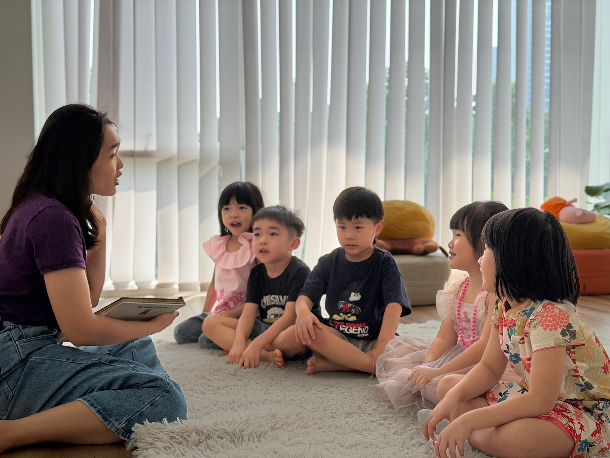
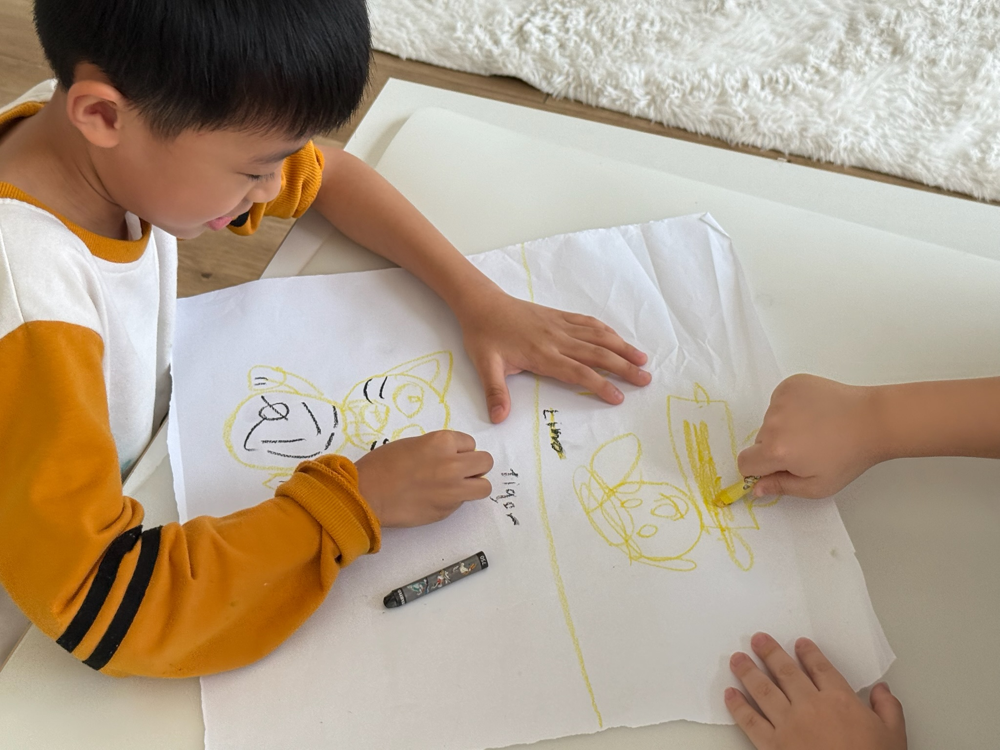
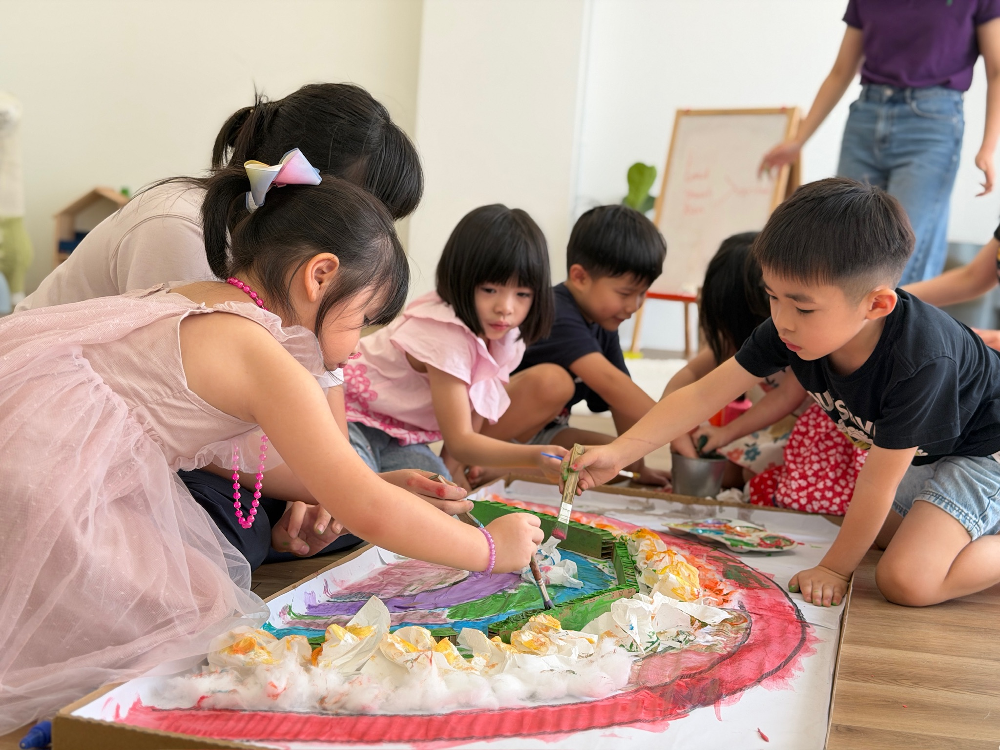
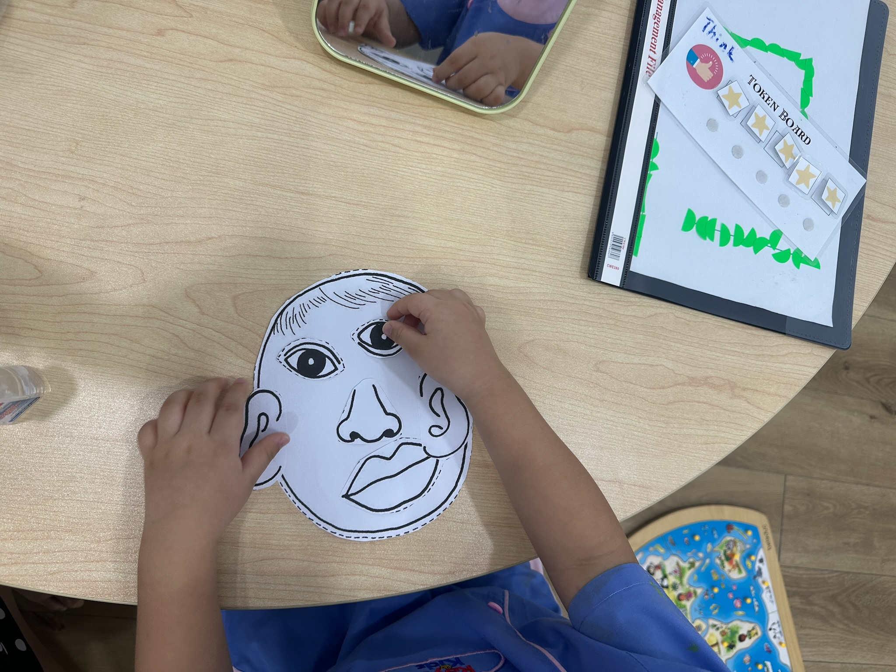

许多家长看到孩子难以专注、不懂管理情绪、不容易交朋友，或无法完成一件事时，往往会觉得孩子需要更多的管教、练习或补习。位于 Bukit Jalil 的 Growing Minds 学习中心则从不同的起点出发：在要求孩子表现更好之前，先了解是什么让学习变得困难。
Growing Minds 由教育心理学家 Ng Xue Min 女士于 2026 年创立，是一所以教育心理学为本、服务 3 至 18 岁孩子的儿童发展与学习中心。中心的核心理念简单而有力：培养学习背后的能力。

“每个孩子都是独特的，没有一种方法适合所有孩子。每个孩子都值得被理解、被支持，并有机会茁壮成长。”Xue Min 说。
这份信念塑造了这所中心，既服务需要额外支持的孩子，也服务希望变得更自信、更独立、更有能力的学习者。

不只看行为
在 Growing Minds，行为被视为一种信息，而不是需要纠正的问题。一个“不听话”的孩子，可能是工作记忆有困难；一个容易放弃的孩子，可能是感到不堪重负；一个在社交上有困难的孩子，则可能需要沟通或情绪理解方面的支持。
这正是 Growing Minds “了解 → 建立 → 练习”方法的用武之地。
首先，团队会了解孩子的学习特质，找出家长和老师所看到的表现背后的能力或障碍。接着，团队通过个别化的支持，有针对性地建立相关能力，再让孩子在真实情境中练习。
“当我见到孩子时，我不会给他们贴标签。我只看他们缺少哪些能力，然后帮他们建立起来。”Xue Min 解释道。
Growing Minds 确实为有 ADHD、自闭症和学习困难的孩子，以及有早期介入需要的孩子提供支持，但不会以诊断来定义一个孩子。中心关注的是孩子需要发展什么，让他们能在日常环境中更好地管理自己、沟通和参与。

培养茁壮成长的能力
Growing Minds 不是补习中心，目标也不只是帮助孩子取得更好的成绩。中心专注于让学习得以发生的基础能力：自我觉察、自我管理、学习上的独立性、思考能力和社交联结。
Xue Min 认为，在瞬息万变的世界里，这些能力非常重要。“我们需要什么才能实现梦想？我认为这些对现在的孩子来说非常重要。”她说，除了学业知识，解决问题、好奇心、灵活变通、勇于提问和适应力同样重要。
这种理念也带有她个人的经历。Xue Min 回忆，自己小时候是个成绩普通的学生，难以把各种信息串联起来。回顾自己的学习历程，加上教育心理学硕士的训练，她意识到学业成绩并不能说明一个学习者的全部。
“这里重视并欣赏每一个孩子。每个人都是独特的，每个人都有自己的路。当这些基础能力建立起来，你在哪里都能发光。”
在真实体验中学习
Growing Minds 采用游戏式、活动式、动手操作和项目式的方法，但每项活动都有明确的发展目的。孩子可能会搭建、烹饪、玩游戏、角色扮演、解谜、创作艺术、活动身体、合作，并一起讨论如何面对挑战。
目的是让孩子在有意义的情境中练习能力，而不只是完成练习册。周末俱乐部正是这样进行的。

周末俱乐部：建立社交联结
Growing Minds 的周末俱乐部，旨在为孩子提供一个温馨的空间，让他们在小组环境中与其他孩子交往、互动和一起学习。根据孩子的年龄和需要，课程会通过实际、动手的活动，着重培养社交情绪发展、友谊、入学准备和独立性。
俱乐部不只是告诉孩子应该怎么做，而是让他们和真正的同伴一起练习：开始一项任务、轮流等待、沟通、团队合作、在事情不如意时调整心态、输了游戏也不发脾气、管理情绪，以及开口求助。对于大部分时间待在家里，或与同龄人互动机会有限的孩子来说，周末俱乐部提供了一个安全而有结构的环境，让他们建立友谊、理解他人，并更自在地应对社交场合。
中心还提供以下服务：
- 幼儿园入学准备课程
- 小学入学准备课程
- 友谊俱乐部
- 思维提升班
- 一对一支持
- 早期介入课程（EIP）
- 个别化教育计划（IEP）
- 心理教育评估
适合每一位学习者
Growing Minds 最大的特点之一，是它并不只是一所特殊需要中心。有诊断的孩子受欢迎，但不需要有诊断也可以参加。
中心也服务发展正常、但可以在情绪调节、专注力、自信心、沟通、解决问题或独立性方面加强的孩子。对家长来说，这意味着更早、更有针对性地打好基础能力，让孩子取得更大的进步。
家庭伙伴关系也是中心的指导原则之一，帮助家长了解自己的孩子，并在家中运用有用而正面的方法。
连接家庭与学校
Growing Minds 的角色也延伸到与学校的合作，特别是在需要让孩子的学习特质在不同环境中得到理解和支持的时候。
通过心理教育评估，中心可以找出孩子的强项和支持需要，撰写报告，并与学校沟通相关信息，让家长和教育工作者在共同的理解下一起努力。
对于希望加强支持多元学习者的学校，Growing Minds 是评估、学习支持、入学准备、家长参与和实用技能培养方面很好的合作伙伴。
Growing Minds：一次陪伴一个孩子
Growing Minds 正在 Bukit Jalil 积极建立自己的社群，背后是 Xue Min 超过八年与儿童和家庭相处的经验，以及她在教育心理学方面的训练。她的愿望很简单：帮助孩子认识自己的强项，应对挑战，对自己的学习更有信心。“我希望他们有自信，而不是被学业成绩定义。我希望他们能够解决问题，而不是感到无助。”
从入学准备、学习困难，到友谊和自信，Growing Minds 在孩子发展的不同阶段提供支持。对家长来说，这是一个跳出学业成绩、更好地了解孩子需要什么才能茁壮成长的机会；学校也可以围绕学习特质和学生支持，探讨有意义的合作。
归根结底，Growing Minds 是要帮助孩子认识自己、与他人建立联结，并凭着能够伴随他们一生的自信与能力去面对挑战。
本文最初刊登于 Kiddy123，作者为 Billy Boey。 阅读 Kiddy123 原文 →